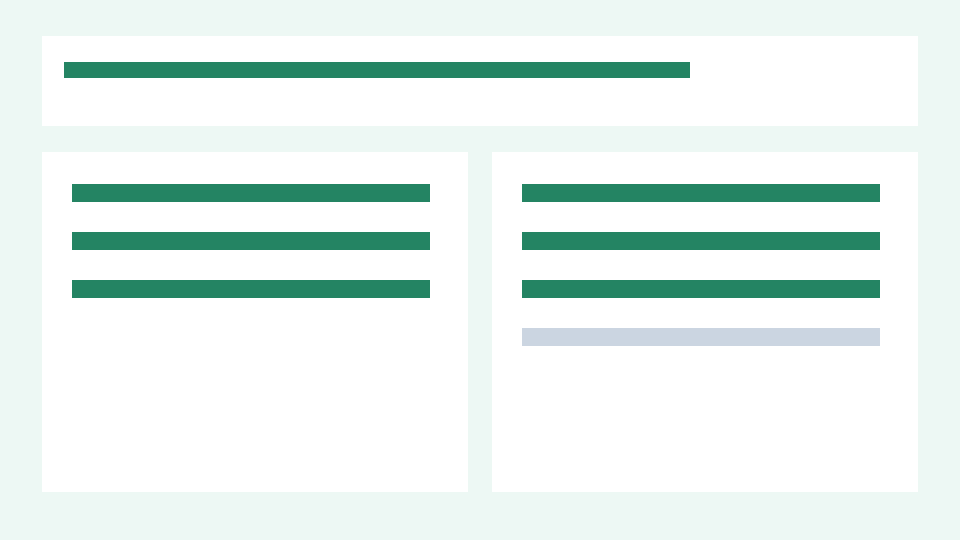

Browser matrix is blocked
The canned repository intentionally has no browser-matrix artifact.
A canned project now has a shareable receipt separating passed checks, changed work, blockers, and unobserved surfaces.
Evidence package status is separate from outcome status. Release readiness is not assessed.
The canned repository intentionally has no browser-matrix artifact.
The offline demo does not claim a Safari result.
The fixture changed to include a self-contained progress receipt.
Git found no whitespace errors in the canned change range.
The dashboard listed work but carried no evidence states.
The report binds a passing command to one claim and keeps every other state explicit.
Privacy-safe local demo repository; no network or user files.
source: agentA reviewed illustration of the fixture before and after evidence states were added.

b00cfd96af35Prepare a shareable progress receipt6ff904638883Add evidence-aware progress statesgit diff --check 746670bff650474902a3a65b83e1749de76b4f1a..b00cfd96af3513f809397ee0327ae7fa57c38d90
git show HEAD:qa/browser-matrix.txt
| Status | Path | Delta |
|---|---|---|
| M | README.md | +1 / -1 |
| M | dashboard.txt | +1 / -1 |
| A | receipt.txt | +1 / -0 |
| A | sharing.txt | +1 / -0 |
changed means the diff contains a modification. verified means fresh evidence supports a claim. blocked means an observed check could not complete. not_observed means the outcome was not inspected.
Manifest text is machine-sanitized. Images are displayed only after an agent or human records a visual review; pixels are not described as sanitized. Agent-authored interpretation is labeled separately from Git and tool facts.